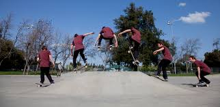

Bienvenue sur TLF
TLF est un site qui répertorie les différentes figueres de skate et les décortique pour vous, vous retrouverez un liens vers une vidéo explicative du tricks.
Le ollie
Ce qui est très important lorque nous voulons apprendre des tricks en skate c'est le positionnement initial des pieds. Voici le bon positionement pour faire un ollie.
Le ollie est la figre de base en skate il s'agit d'un saut. Mais il ne faut pas le sous-estimer il est long à apprendre.
Le shuv-it
Le shuv-it est un demi-tour horizontale de la planche. Tout d'abord voici la position initiale des pieds.
Et voici à quoi cela doit ressembler et comment faire.